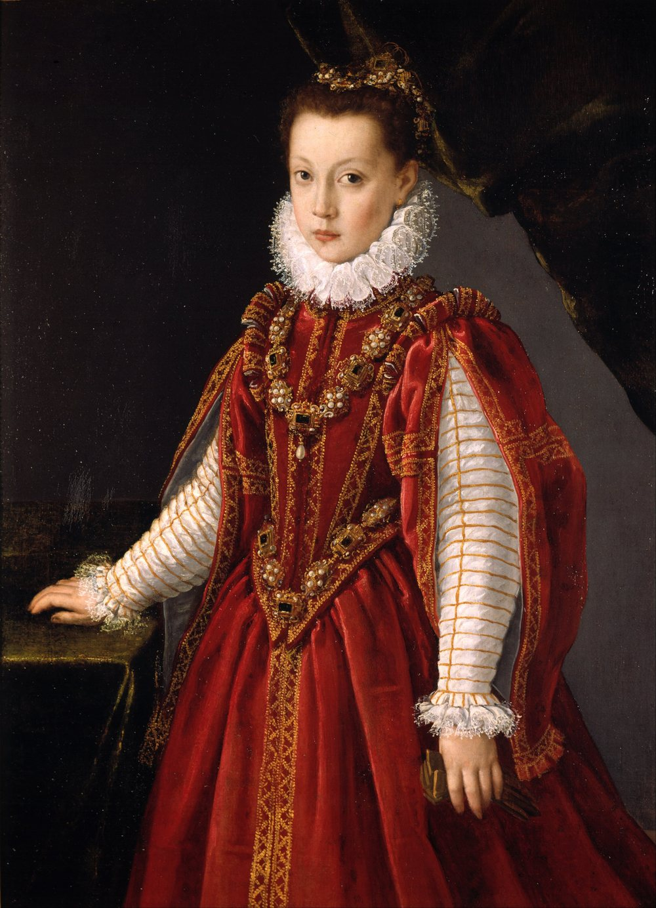

Renascimento
1350 a 1620 d.C.
CONTEXTO HISTÓRICO:
O renascimento ocorreu durante a transição da Idade Média para a Modernidade, quando o modelo feudal deu espaço a uma maior comercialização de mercadorias. Com isso, os indivíduos passaram a ter contato com povos de diferentes culturas, que influenciaram no modo de enxergar o mundo.
A primeira nação a desenvolver características renascentistas foi a Itália, lugar onde o dogmatismo religioso era questionado e o pensamento racional foi valorizado. Em um curto espaço de tempo, as ideias se espalharam por outros territórios europeus, com a consolidação do movimento.
Chamado também de renascença ou renascentismo, o movimento trouxe à tona uma alteração estrutural da sociedade. Ele chegou às mais diversas organizações: política, cultura, arte, religião, ciência e classes sociais.
Pode-se considerar que, durante o renascimento, em todos os campos do esforço humano, foram abandonadas as limitações da concepção medieval — as estruturas se alteraram e a forma de analisá-las também.

Na arte:
Artistas homens eram os principais objetos de livros e pesquisas. A arte produzida por mulheres era frequentemente ignorada ou considerada uma exceção e, consequentemente, tinha maior probabilidade de cair no esquecimento, deteriorar-se ou permanecer armazenada nos museus. Em alguns casos, obras de artistas mulheres pouco valorizadas chegaram a ser atribuídas a artistas homens mais conhecidos.
A educação era um ponto fundamental. Grande parte da arte renascentista estava relacionada ao aprendizado — sobre a Antiguidade clássica, filosofia, anatomia e matemática, além das habilidades adquiridas como aprendiz em um ateliê profissional. Entretanto, as normas de gênero da época faziam com que a educação das mulheres raramente ultrapassasse aquilo que era considerado necessário para que se tornassem esposas e mães. Com poucas ou praticamente nenhuma oportunidade de aprendizagem com mestres e artistas homens, as mulheres encontravam-se em uma posição de desvantagem.
Em todos esses casos, a imagem pública das mulheres artistas estava profundamente ligada às ideias de gênero da época, que esperavam que uma mulher respeitável fosse virtuosa, piedosa e obediente a Deus, assim como ao seu pai ou marido. Quando uma artista não correspondia a esses padrões, isso poderia significar o fim de sua carreira, como ocorreu com a breve trajetória da escultora Properzia de' Rossi.
Referência bibliográfica:
ELIAS, Kauane. Renascimento: características, contexto histórico e influências. Estratégia Vestibulares, 8 nov. 2022. Disponível em: vestibulares.estrategia.com/portal/materias/historia/caracteristicas-do-renascimento.
SMARTHISTORY. Female artists in the Renaissance. Smarthistory, [s. d.]. Disponível em: smarthistory.org/female-artists-renaissance.